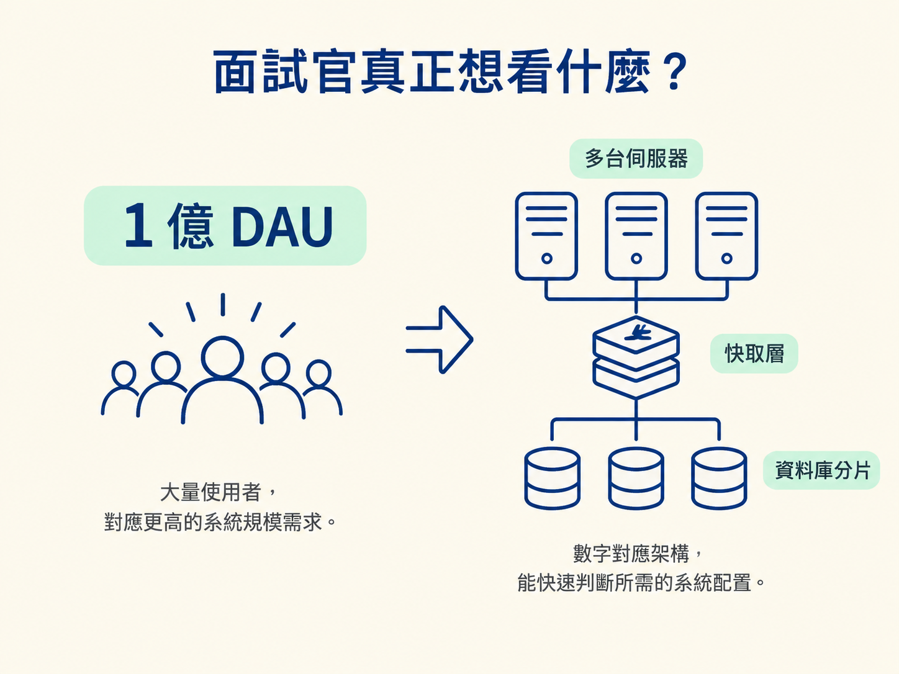
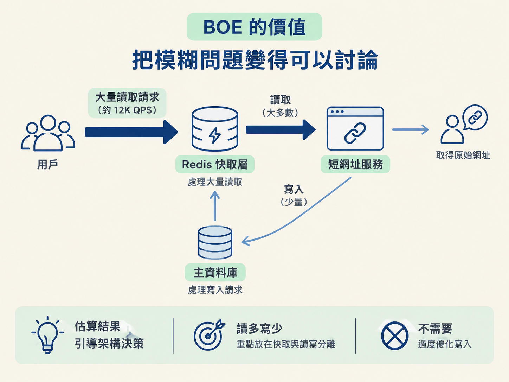
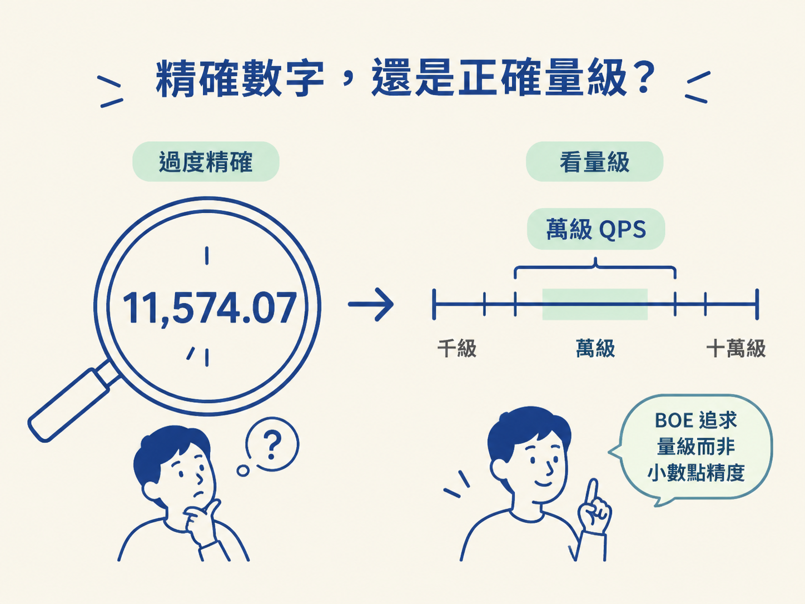

學習目標：理解 Back-of-the-envelope 估算的本質，知道它為什麼是系統設計面試的重要基本功，以及如何用估算結果支撐架構決策。
想像你在午餐時間突然想到一個問題：「我們的 App 每天處理多少筆訂單？」你拿起桌上的信封，在背面寫下：
100 萬用戶，每人每天 2 筆訂單 → 200 萬筆／天 ÷ 86,400 秒 ≈ 23 QPS
這個數字不需要精確到個位數，卻能立刻給你一個重要線索：23 QPS 大致是小型系統的規模，通常不需要一開始就搬出複雜的分散式架構。
這就是 Back-of-the-envelope estimation（信封背面估算）：用簡單的四則運算和經驗法則，快速算出一個「夠用」的量級（order of magnitude），而不是追求精確答案。這個名稱，來自工程師過去習慣在信封背面做粗略計算的傳統。
很多人以為，面試官要求估算，是在考數學：算對就加分，算錯就扣分。其實這是最容易走偏的理解。面試官更在意的是：你能不能從幾個數字，推導出系統該長什麼樣子。
有經驗的工程師聽到「1 億日活躍用戶（DAU）」時，腦中不只是出現一個很大的數字，還會連想到：這可能需要分散式架構、快取層和資料庫分片。
相反地，聽到「1 萬 DAU」時，你會知道規模可能小得多，甚至一台伺服器就能應付。BOE 估算訓練的，正是這種「數字 → 架構」的轉換能力。

「我覺得這裡需要快取」是一種直覺；「每秒有 1 萬次讀取，但單機 Postgres 的瓶頸約在 1K QPS，所以需要快取層」則是有數字根據的判斷。
後者之所以更有說服力，是因為你不只是提出方案，還說明了為什麼需要它。面試中，每個重要的架構決策背後，都應該有一組數字支撐；BOE 估算就是產出這些數字的工具。
算出數字只是第一步，接下來還要問：究竟是帶寬、儲存，還是 CPU 會先撐不住？
例如，估算出每天會新增 2TB 資料，你就應該立刻想到：單機 SSD 很可能不夠，需要考慮分散式儲存或雲端物件儲存。這種從數字一路推到瓶頸的能力，往往就是初級工程師和高級工程師的差別。
BOE 估算最重要的價值，不是把數字算到非常準，而是幫你把問題想清楚。它就像一把尺，先替模糊的系統需求量出大概的尺寸，再決定要用什麼架構。
以設計一個短網址服務（URL Shortener）為例：
| 步驟 | 估算 | 結論 |
|---|---|---|
| DAU | 1 億用戶 | 大型系統 |
| 每人每天 | 10 個短網址 | 10 億次／天 |
| QPS | 10 億 ÷ 86,400 ≈ 11,574 | 約 12K QPS |
| 讀寫比 | 100:1（讀取遠多於寫入） | 瓶頸在讀取 |
這組估算帶來的訊息很直接：系統大約要處理 12K QPS，而且讀取量遠高於寫入量。因此，設計重點應該放在快取（Redis）和讀寫分離，而不是把大量時間花在寫入優化上。

這就是估算和你過去做系統設計時的關係：當你說「這裡要加快取」或「資料庫需要分片」時，不要只靠感覺。先用幾個簡單數字確認規模，架構選擇才有根據。
新手常見的問題，是太執著於算出精確答案：
100M DAU × 10 posts = 1B posts／day ÷ 86,400 = 11,574.07 QPS
但在系統設計裡，小數點後的數字通常沒有實際意義。面試官不在乎你回答 11,574 還是 12,000，他在乎的是你是否知道：這是一個「萬級 QPS」的系統。
經驗法則：BOE 估算的目標是量級（order of magnitude），不是精確值。12K QPS 和 15K QPS 在架構上幾乎沒有區別，但 12K QPS 和 1.2M QPS 的架構完全不同。
所以，做完估算後，不必為了把答案從 12,000 修正到 11,574 而停留太久。你真正要確認的是：這個數字落在哪個量級？它會不會讓原本的架構選擇失效？

在系統設計面試中，BOE 估算通常放在第二步：先明確需求，再估算規模，最後才開始設計架構。流程可以拆成三段：
整個過程通常不需要超過 5 分鐘。如果你花了 15 分鐘埋頭算數字，反而可能偏離面試重點。面試官想看的是你的設計能力，而不是你能不能把計算機上的小數點算到最後一位。
Back-of-the-envelope 估算是一種用簡單算術快速掌握系統規模的方法。它追求的是量級，不是精確數字。
在系統設計面試中，面試官透過 BOE 估算觀察三件事：你對系統規模的直覺、能不能用數字支撐架構決策，以及能不能從數字判斷瓶頸。
下次你在設計系統時，先別急著挑資料庫或畫架構圖。先問幾個基本問題、算出大致規模，再讓數字告訴你該把力氣放在哪裡。下一課會拆解四種核心估算技巧，讓你在面試中更快、更自然地完成這一步。